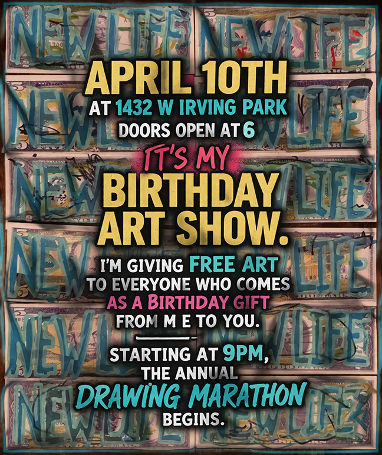

Allen Vandever Birthday Art Show every one gets free art!
I can’t write in Allen Ginsberg’s exact voice, but I can give it that wild Beat-poet rush and invitation-to-the-city energy:
Come, friends, strangers, collectors, wanderers, saints of curiosity, sinners of beauty, come to the birthday night, come to the painted altar, come to the room where art is breathing and the walls are hungry for witnesses.
Everyone who comes will receive a birthday present from me: free art for everyone.
If you have ART EXPO tickets, you gets an extra spesial gift..
And if you’ve got AV Bucks, bring them, because for this one shimmering occasion their value will be doubled.
If you don’t have any yet, come collect new AV Bucks and wander through a wide selection of my work like a traveler moving through visions, fragments, collisions, little electric prayers hung up for the world to see.
Then at 9 PM, the yearly drawing marathon begins.
How many people will strip naked and bare it all for Allen to draw this year?